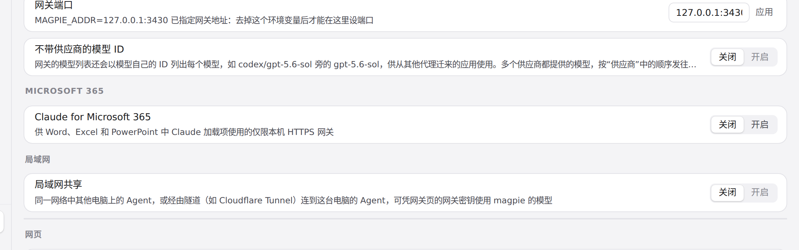

#1331 界面预览
commit dc2d1ee · 回到 PR · 在「设置 › 网络与共享」里新增「Microsoft 365」一节：一个开关，以及开启后显示的仅本机 HTTPS 地址、证书状态与信任操作、网关密钥复制和自动加入的允许网页。
红线是鼠标走过的轨迹，红色圆环是一次点击；底部文字是这一步在做什么。空格暂停，← → 逐段查看。
设置中的 Microsoft 365 一节 · 未开启时这一节显示的内容
 开启 Claude for Microsoft 365 · 开启后这一节显示的内容：地址、证书、密钥、允许的网页
开启 Claude for Microsoft 365 · 开启后这一节显示的内容：地址、证书、密钥、允许的网页

开启 Claude for Microsoft 365 · 点击「开启」后，Microsoft 365 这一节的显示
 开启 Claude for Microsoft 365 · 点「复制密钥」后这一节的样子
开启 Claude for Microsoft 365 · 点「复制密钥」后这一节的样子